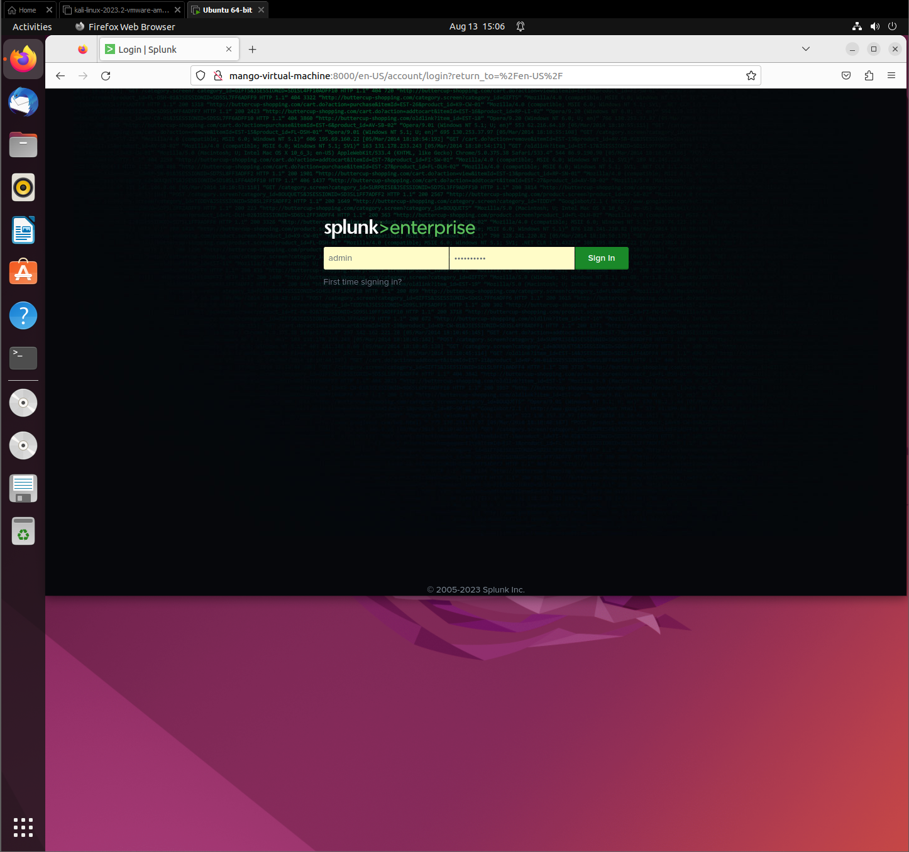
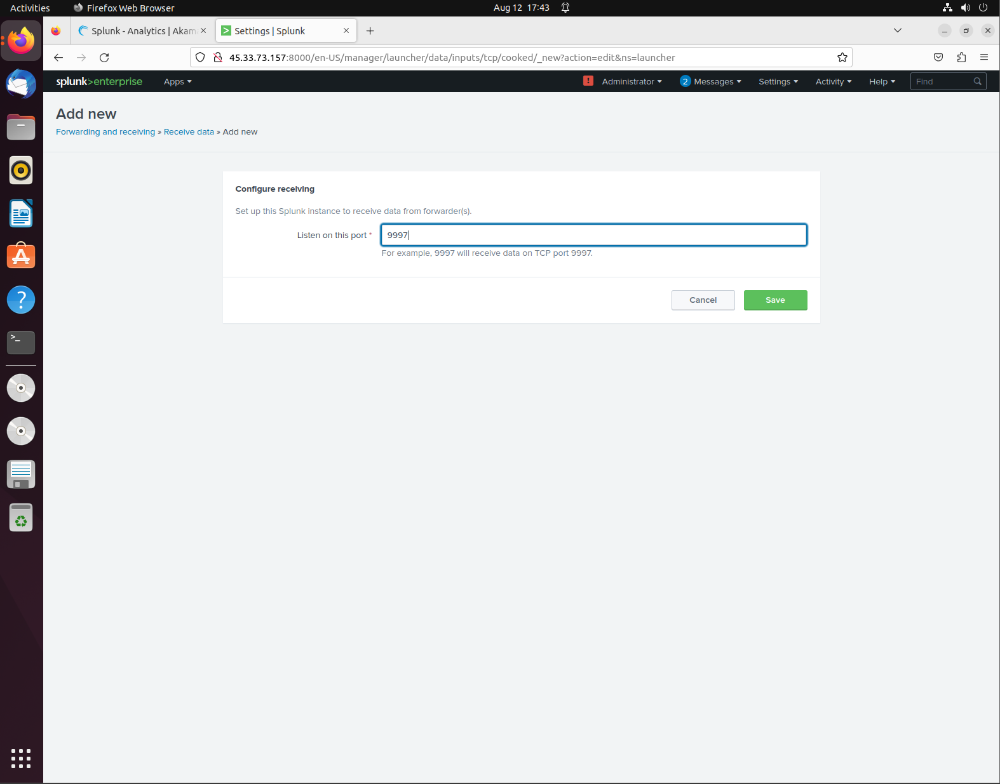
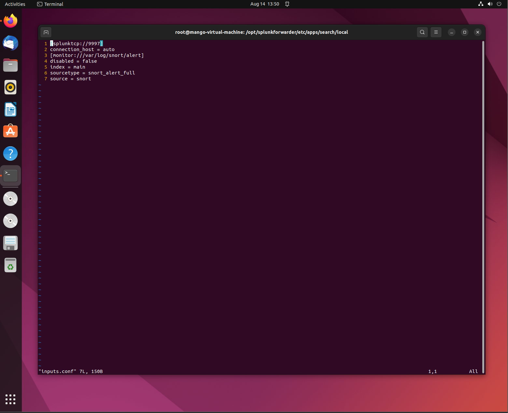
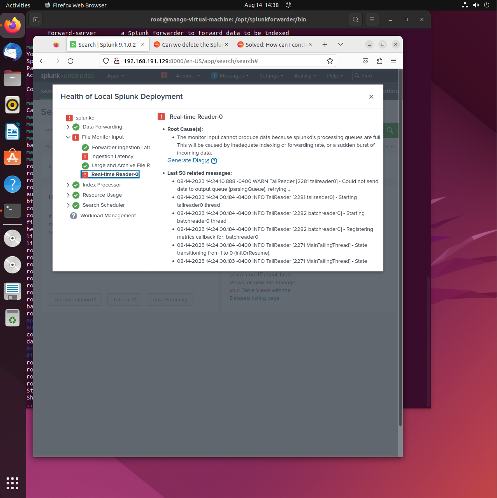

Security Event Monitoring with Splunk
Setting up the Splunk Enterprise on the Ubuntu 20.04 system
First, I tried creating an instance through Linode's Cloud, however, ran into multiple errors including this error code:
- Error connecting: error:14090086:SSL routines:ssl3_get_server_certificate:certificate verify failed - please check the output of the openssl verify command for the certificates involved; note that if certificate verification is enabled (requireClientCert or sslVerifyServerCert set to "true"), the CA certificate and the server certificate should not have the same Common Name.. Your Splunk instance is specifying custom CAs to trust using sslRootCAPath configuration in server.conf's [sslConfig] stanza. Make sure the CAs in the appsCA.pem (located under $SPLUNK_HOME/etc/auth/appsCA.pem) are included in the CAs specified by sslRootCAPath. To do this, append appsCA.pem to the file specified by the sslRootCAPath parameter.
After hours of researching and trying to configure/update the certificates being used, it still wouldn't budge, so instead of using a cloud instance, I decided to download the Splunk Enterprise software directly onto my Ubuntu box.
Here were the steps taken in order to install Splunk:
- Create an account at www.splunk.com
- Head over to products and free trial, and click "Download Free 60-day Trial"
- Click the preferred OS, mine was Linux and the .deb extension.
- After downloading, open up a terminal and run these commands:
wget -O splunk-8.2.4-87e2dda940d1-linux-2.6-amd64.deb
ls (copy the download file name)
sudo apt install ./(paste the download file name)
- After the installation, change to root user using this command:
sudo su
- Change to where the installation is found:
cd /opt/splunk/bin
- Next accept Splunk license:
./splunk start --accept_license -y
- Create a username and password used to log into the Splunk Application
- Once the web server starts, copy and paste the IP into your browser.

Configuring features on Splunk
Now that Splunk is downloaded and we are logged in, we want to make some changes first in order to configure for our lab environment.
Once you are brought to the Dashboard, we want to first configure the receiving of data:
- Click on Settings on the top right
- Go to Data and click on Forwarding and Receiving
- We want to configure the data being received, so click on add new and add a new port to listen to: 9997

Next, Find more Apps on the top left and scroll to Browse More Apps
- Install the "Snort Alert" for Splunk
- This download is important in providing field extractions for Snort alert logs (fast and full) as well as dashboards, saved searches, reports, event types, tags and event search interfaces.
- When you click install and the credentials window pops up, type in your credentials for your Splunk Account from splunk.com not the credentials you used to log into the web application.
Setting up the Universal Forwarder
In order to collect the data that is coming from the Snort IDS and into the Splunk Application, we must download and use the Splunk Universal Forwarder.
The Splunk Universal Forwarder is responsible for forwarding/collecting the data from remote sources and forwarding the data into Splunk software for indexing and consolidation.
They can be used to scale tens of thousands of remote systems, collecting terabytes of data.
Here are the steps in order to download the Universal Forwarder:
- Choose your preferred download file based on what fits your requirements
- Next, move the download to the opt software, its good to have it all under the opt directory
- Once moved, change directory to /opt
- Next run the install: sudo apt install
Now that the file has been installed, change to the splunkforwarder/bin directory. Accept the license agreement and create a username and password for the forwarder.
Configuring Forward Server to forward the data to the Splunk Server:
sudo ./splunk add forward-server 127.0.0.1:9997
Next we are responsible for configuring the outputs.conf / inputs.conf files.
- Head over to the /opt/splunkforwarder/etc/system/local directory. In the outputs.conf file, make sure that they are correctly formatted.
Next we want to add the actual path of the file we want forwarded to the Splunk Application:
- In this case, I want to forward the Snorts alert file that we generated from the Snort virtual lab.
- We add this by first directing to the bin directory, and running this command:
sudo ./splunk add monitor /var/log/snort/alert
Lastly, the following should be added in to the inputs.conf file which can be found under this file path:
- /opt/splunkforwarder/etc/apps/search/local
Before we run splunk, we have to restart the splunk application.

Analyzing the Data
With the configuration out of the way, we can now view the imported data by navigating under Search and Reporting and clicking on Data Summary and then under sources.
If configured correctly, the data should be present with the name of the file being the name of the virtual machine.
Using Splunk, you are able to break down each event, view the full event and time stamp.
You are able to visualize each event with selected fields to create graphs, charts, or any other form of visualization to view trends.
Troubleshooting and Errors
While running through this lab I had many different errors.
One flaw I ran into was reaching the maximum free disk space reached error when trying to conduct a search using the Installed Snort Alert for Splunk App.
- I was able to fix it by using this document:
Link: https://medium.com/@sweetdee360/making-my-way-through-splunk-bff7c1ccb1c1
One of the biggest problems I was facing was through the File Monitoring Input.
I was having trouble with the Ingestion Latency and Real-time Reader-0.
These two factors were telling me that the monitor input couldn’t produce data because the process queues were full and passing the threshold.
I tried searching for the error and haven’t really found a feasible solution that would be able to work.
